Unpaired T1 → T2 Brain MRI Translation: CycleGAN vs CUT vs SynDiff
A same-data, brain-only comparison of two GANs and a diffusion model, and a hidden shift we found in SynDiff
Key findings
- We trained computers to turn one kind of brain MRI scan (T1) into another (T2), using only unmatched scans: the T1s and the T2s came from different patients.
- We compared three methods on exactly the same data, scoring only inside the brain: CycleGAN, CUT and the diffusion model SynDiff.
- Surprise 1: CUT, which we expected to win, did much worse than CycleGAN (brain SSIM 0.146 vs 0.512). It keeps T1's fine light-and-dark pattern instead of flipping it the way a real T2 does.
- Surprise 2: SynDiff's images looked realistic by eye but scored worst of all (0.105). In our full-data run, its T1 → T2 outputs sat, as a whole, about 8 pixels too far right and 2 pixels too high: that is the single shift that best lined them up across the scored slices. Its two translation directions learned equal and opposite shifts, which cancel on a round trip, so training never noticed.
- The fix: a silhouette loss, which says "the brain outline of every output must sit where its input's outline sits". It removed the shift from all four of SynDiff's generators. SynDiff + silhouette loss reached brain SSIM 0.543 and beat CycleGAN on 17 of 20 test patients (p = 0.00017). On PSNR and MAE the two are about level.
Two photographs of one brain
An MRI scanner can photograph the same brain in several different "styles". In one style, fluid is black; in another, fluid glows white. Doctors read these styles side by side, because each one makes different things stand out. Each style takes minutes of scanner time, and sometimes one is missing: the patient moved, the session was cut short, or a hospital's routine simply left it out.
So here is a tempting question: could a computer look at the style we have and imagine the one we don't? This is called image-to-image translation, and it is what our class project was about. We took T1-weighted brain scans and asked three different machine-learning methods to produce the matching T2-weighted scans.
This post tells the story of that project, including two wrong turns. Our first hypothesis turned out to be backwards. Then the method whose images looked best to our eyes turned out to score worst, because of a flaw that is invisible to the eye: its whole output was shifted by a few pixels. We tracked down where the shift comes from, and fixed it with one small extra rule during training. No machine-learning background is needed: we explain every idea as it comes up.
1. Problem statement
1.1 MRI in one paragraph
MRI (magnetic resonance imaging) uses a strong magnet and radio waves to measure signals from the hydrogen in the body's water and fat. By changing the timing of the radio pulses, the scanner can make different tissues bright or dark. Two of the most common settings are called T1-weighted and T2-weighted (we'll just say T1 and T2). In T1, the fatty white matter deep in the brain is bright and fluid is dark. In T2 it is roughly the other way round: fluid is bright and white matter is darker. Swelling around a brain tumour holds extra water, so it often stands out brightly in T2. A 3D scan is a stack of 2D images called slices; we work one slice at a time.
1.2 The task, precisely
Input: one 2D T1 slice of a brain, 256 × 256 pixels, brightness from 0 (black) to 1 (white).
Output: a 2D T2 slice of the same size, showing the same patient's anatomy as it would look in T2.
Training data: unpaired. We have a pile of T1 slices from 160 patients and a pile of T2 slices from a different 160 patients. No T1 slice in training ever comes with its own T2.
Why tie our own hands like this? If we had matched pairs (the same slice in both contrasts), we could simply show the computer thousands of "this T1 should become this T2" examples. In practice, cleanly matched pairs are often hard to get: scans come from different hospitals, machines and protocols. Unpaired methods can learn from whatever is available. The dataset we use, BraTS 2021, actually has both contrasts for every patient. That is lucky for us: we hide the pairs during training to simulate the unpaired setting, then bring them back at test time as an answer key. For every test slice we know exactly what the real T2 looks like.
1.3 What counts as "good"
A T2 that merely looks realistic is not enough. A synthetic scan that invents or erases a tumour while looking perfectly plausible would be worse than useless. So we judge every method by how closely its output matches the real T2 of the same patient, pixel by pixel, inside the brain only. The exact scores are defined in Section 3.6.
2. Related work
Our three methods sit on two branches of a family tree: GANs (Pix2Pix, then CycleGAN and CUT) and diffusion (DDGAN, then SynDiff).
2.1 GANs: a forger and a detective
A generative adversarial network (GAN) [1] pits two neural networks against each other: the generator, a forger, turns an input (for us, a T1 slice) into an image, and the discriminator, a detective, says whether an image is real or forged. Training nudges each network's millions of internal numbers to shrink its loss, a score of how badly it is doing. The classic GAN objective is:
\[ \begin{aligned} \min_G \max_D \;\; & \mathbb{E}_{y}\big[\log D(y)\big] \\ +\; & \mathbb{E}_{x}\big[\log\big(1 - D(G(x))\big)\big] \end{aligned} \]In words: the detective \(D\) tries to give real T2 images \(y\) a high score and forgeries \(G(x)\) a low one, while the forger \(G\) tries to make forgeries the detective can't tell apart.
The key limitation is already visible here: the detective only asks "does this look like a T2?", never "is this the T2 of this particular patient?"
Details for ML readers
CycleGAN and CUT use the least-squares variant of this objective (LSGAN) [2]; SynDiff uses the non-saturating logistic variant (a softplus loss). The idea is the same as the equation above.
2.2 With pairs: Pix2Pix
Pix2Pix [3] (Isola et al., CVPR 2017) is the paired version: alongside the GAN loss, it compares each output with its true target pixel by pixel. It also popularised the PatchGAN, a detective that judges 70 × 70-pixel patches rather than the whole image, used by CycleGAN, CUT and SynDiff's translation networks (SynDiff's diffusion detectives score the whole image; Section 3.4). Pix2Pix needs pairs, so for us it is a future-work "upper bound".
2.3 Without pairs: CycleGAN
CycleGAN [4] (Zhu et al., ICCV 2017) removes the need for pairs with cycle consistency: it trains T1 → T2 and T2 → T1 generators, and, like a sentence translated to French and back, a T1 sent to T2 and back should return unchanged. This cycle loss ties each output to its input without pairs, assuming that a translation which can be undone has kept the content. As we will see, a translation can be undone even when it gets something wrong.
2.4 Contrastive translation: CUT
CUT (Contrastive Unpaired Translation) [5] (Park et al., ECCV 2020) drops the second generator and uses contrastive learning on patches instead: an output patch should look more like the input patch from the same location than like input patches from elsewhere (the PatchNCE loss). The authors report better quality and less training time than two-sided methods such as CycleGAN on natural-image benchmarks. Our proposal hypothesised that CUT would keep fine anatomical structure better than CycleGAN; Section 4.1 tests that.
2.5 Cheating the round trip, and geometry constraints
A round trip can be passed without doing the job honestly. Chu, Zhmoginov and Sandler [18] showed that CycleGAN can hide a faint, almost invisible pattern in its output and read it back on the return trip, satisfying the cycle loss even when the visible translation is unfaithful: "a master of steganography" (hiding messages in plain sight).
Other work ties input and output with geometry instead. DistanceGAN [19] (Benaim and Wolf, NeurIPS 2017) preserves distances: inputs that are far apart should give outputs that are far apart. GcGAN [20] (Fu et al., CVPR 2019) requires that translating a flipped or rotated input gives the flipped or rotated version of the normal output.
2.6 Diffusion models: DDPM, DDGAN, SDEdit, DDIB
Diffusion models learn to remove noise: training buries clean images in noise and teaches a network to undo one small step, and generating applies that network again and again, starting from pure noise. DDPM [6] (Ho et al., NeurIPS 2020) produces high-quality images but needs about a thousand small, slow steps. DDGAN [7] (Xiao et al., ICLR 2022) takes a few large steps, each trained like a small GAN, cutting sampling to a handful of steps.
Diffusion can also translate without pairs. SDEdit [8] (Meng et al., ICLR 2022) noises the input and denoises it with a model trained only on the target style; DDIB [9] (Su et al., ICLR 2023) encodes the source into noise with one style's model and decodes it with the other's. We did not run these; they are natural next baselines.
Newer examples: UNSB [24] (Kim et al., ICLR 2024) trains unpaired translation as a series of adversarial steps along a learned random path between the two image collections (a Schrödinger bridge), much as SynDiff trains its large steps. FGDM [25] (Li et al., IEEE Transactions on Medical Imaging 2024) trains only on the target modality and guides it with frequency-filtered versions of the source to keep anatomy in place, warning that translation can "distort, shift, or even remove structures".
Details for ML readers: diffusion background
- DDGAN's argument: small steps are needed only because each reverse step is modelled with a simple bell-curve (Gaussian) guess. With large steps the true denoising distribution is complex, so DDGAN models each step with a conditional GAN (a generator proposes the less noisy image, a discriminator judges it).
- In SDEdit, the amount of added noise trades realism against faithfulness to the input.
- UNSB expresses the Schrödinger-bridge problem as a sequence of adversarial learning problems.
2.7 Diffusion for unpaired medical translation: SynDiff
SynDiff [10] (Özbey, Dalmaz et al., IEEE Transactions on Medical Imaging 2023) brings DDGAN's few-large-steps idea to unpaired medical translation. A T1 → T2 diffusion model must be conditioned on a T1, which normally needs pairs, so SynDiff adds a CycleGAN-style pair of translation networks that manufacture the missing half of each pair (Section 3.4). The authors report "quantitatively and qualitatively superior performance against competing baselines" on multi-contrast MRI and MRI–CT translation, including GAN and diffusion models. We used the official code, unmodified.
2.8 When translation goes wrong: hallucination and structure losses
Cohen, Luck and Honari [11] (MICCAI 2018) showed that translation models trained on targets with too many or too few tumours add or remove tumours to match: GAN-style losses match the overall look of the target collection, not the facts of each image. So we score against each patient's real T2, not realism.
A loss that compares the layout of input and output, ignoring brightness, can keep structure in place. MIND [12] (Heinrich et al., Medical Image Analysis 2012), designed for aligning scans of different types, describes each pixel by how similar its neighbourhood is to nearby ones, which stays roughly the same across MRI contrasts. Yang et al. [13] used it to constrain a CycleGAN for brain MR → CT. It was one of our two candidate fixes.
2.9 The data: BraTS 2021
The BraTS 2021 benchmark [14] (Baid et al.), building on earlier releases [15, 16], provides brain MRI of patients with gliomas (a type of brain tumour): 1,251 training cases, each with four aligned contrasts (T1, contrast-enhanced T1, T2 and FLAIR), skull-stripped (skull and scalp removed) and stored as 240 × 240 × 155 volumes. We use only T1 and T2.
2.10 Why these three methods, and what is new
Why these three? CycleGAN and CUT are the most widely used one-input, one-output unpaired GANs; SynDiff is a recent diffusion model built for exactly our task, with public code. UNIT [21], MUNIT [22] and attention-guided GANs [23] add moving parts (a shared hidden code, several outputs per input, learned attention) that would blur a three-way comparison, and the SynDiff paper already compares against them [10].
- A same-data, brain-only comparison of a GAN, a contrastive GAN and a diffusion model: same unpaired, patient-level split, same 200 test slices, same brain-only metrics, plus a patient-by-patient statistical test.
- A hidden, cycle-cancelled shift in SynDiff: a geometric version of Chu et al.'s loophole [18], with equal and opposite shifts that cancel on the round trip, found in a diffusion model whose diffusion generators inherit it. A four-generator experiment confirms it.
- A simple silhouette loss that removes it, related to geometry-consistency constraints such as GcGAN [20] but needing only the input's own brain outline. Chosen on validation patients only, it needs no post-processing and gives SynDiff the best SSIM in our single-run comparison.
3. Approach
3.1 Data: from hospital volumes to training slices
Input: the BraTS 2021 T1 and T2 volumes. Output: 256 × 256 grayscale PNG slices and a record of every choice (split.json). Our script preprocess.py does five things:
- Split by patient. 400 of the 1,251 patients, picked at random (fixed seed 42): 160 give only T1 slices for training, a different 160 only T2, and 80 are held out for testing. No patient is in two groups, so training is truly unpaired.
- Normalise brightness per scan. MRI brightness has no fixed units, so each volume is clipped to the 0.5th–99.5th percentile of its brain voxels (3D pixels) and scaled to 0–1; background stays 0.
- Choose slices. Keep horizontal (axial) slices with at least 40% of the volume's largest brain area, then every second one (neighbours are near-duplicates).
- Format. Rotate upright, pad 240 → 256 with black, save as 8-bit PNG.
- Answer key. For test patients, save the T1, T2 and brain mask under identical filenames.
| Set | Patients | Slices | Used for |
|---|---|---|---|
| trainA (T1 only) | 160 | 7,551 | training |
| trainB (T2 only, different patients) | 160 | 7,514 | training |
| test (T1, T2, brain mask) | 80 | 3,824 | held out |
| ↳ fixed evaluation subset | 20 | 200 | all reported test scores (10 slices per patient) |
| ↳ validation patients | 5 | 241 | choosing SynDiff settings only (not in the subset above) |
Table 1. Our split of BraTS 2021. All numbers from split.json and results/syndiff_val/val_results.csv.
Why only 20 of the 80 test patients? We fixed a 200-slice test subset (20 patients × 10 evenly spaced slices) at the very start, before we had any results, so that every model and every checkpoint (a saved copy of a model partway through training) is scored on exactly the same slices: all 20 scored runs in results/results.csv use them. It also keeps evaluation quick. Scoring all held-out patients is future work.
Assumption: T1 and T2 line up, as pixel-by-pixel scoring requires. On 5 random patients (check_alignment.py), shapes and positions match exactly and the brain outlines overlap with a Dice score of 1.000. Dice measures the overlap of two shapes:
In words: twice the shared area divided by the total area. 1 means the outlines are identical; 0 means they don't touch.
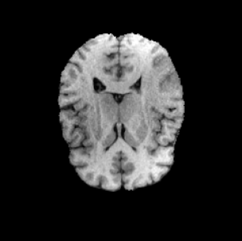
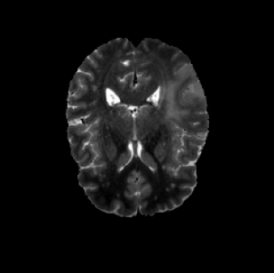
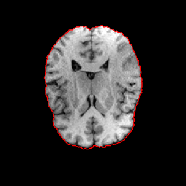
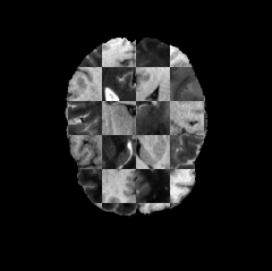
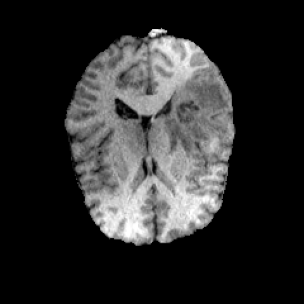
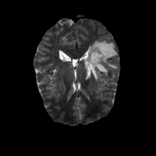
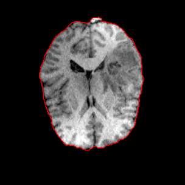
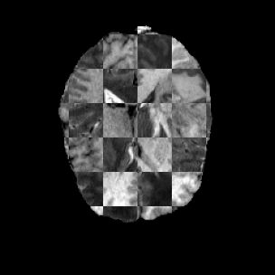
BraTS2021_01204, slice 78; B: BraTS2021_01277, slice 72). Columns: T1, T2, the T1 with the T2's brain outline in red, and a checkerboard alternating T1 and T2 squares. Look at the checkerboard: folds and ventricles continue smoothly across square borders, so the two scans are aligned (Dice 1.000 for all five patients).3.2 CycleGAN
Input: a T1 slice \(x\). Output: a synthetic T2 slice \(G(x)\). Networks: two generators, \(G\) (T1 → T2) and \(F\) (T2 → T1), and two patch-based detectives, one per contrast.
The cycle loss is:
\[ \begin{aligned} \mathcal{L}_{\text{cyc}} \;=\; & \mathbb{E}_{x}\,\big\lVert F(G(x)) - x \big\rVert_1 \\ +\; & \mathbb{E}_{y}\,\big\lVert G(F(y)) - y \big\rVert_1 \end{aligned} \]In words: translate there and back in both directions, and measure the average absolute pixel difference from the starting image (that is what \(\lVert\cdot\rVert_1\) means).
The full objective adds a GAN loss for each generator and an "identity" loss (a T2 fed to the T1 → T2 generator should come out unchanged):
\[ \begin{aligned} \mathcal{L} \;=\; & \mathcal{L}_{\text{GAN}}(G, D_{T2}) + \mathcal{L}_{\text{GAN}}(F, D_{T1}) \\ +\; & 10\,\mathcal{L}_{\text{cyc}} + 5\,\mathcal{L}_{\text{idt}} \end{aligned} \]In words: look real, survive the round trip (weighted 10 times a GAN term), and don't change an image that is already in the target style.
Design choices: the official code and default settings, on grayscale 256 × 256 slices, for 60 epochs (an epoch is one full pass over the training slices). Assumption: the T1 → T2 mapping can be inverted, and a mapping that can be inverted has preserved the content.
Details for ML readers
- Generators: ResNet with 9 residual blocks, 11.37 million parameters each. Discriminators: 70 × 70 PatchGAN.
- Official code at the commit pinned in
upstream_versions.txt;--input_nc 1 --output_nc 1 --load_size 256 --crop_size 256, so no resizing or cropping. - Least-squares GAN loss; cycle weight \(\lambda_A = \lambda_B = 10\); identity weight 0.5 × 10 = 5; Adam with learning rate 2 × 10⁻⁴, 30 epochs at a constant rate then 30 decaying linearly to 0; batch size 1; random horizontal flips; image pool of 50.
3.3 CUT
Input / output: as for CycleGAN. Networks: one generator (CycleGAN's design), one patch-based detective, and a small helper network that turns each image patch into a short list of numbers for comparison. There is no T2 → T1 generator and no cycle.
The PatchNCE loss for one output patch is a multiple-choice quiz:
\[ \begin{gathered} \ell(v, v^{+}, v^{-}) \;=\; -\log \frac{e^{s^{+}}}{e^{s^{+}} + \sum_{n=1}^{N} e^{s^{-}_{n}}} \\ \text{with}\;\; s^{+} = \frac{v \cdot v^{+}}{\tau}, \quad s^{-}_{n} = \frac{v \cdot v^{-}_{n}}{\tau} \end{gathered} \]In words: among one right input patch and \(N\) wrong ones, the output patch should "pick" the right one; the loss is small when its similarity score \(s^{+}\) beats all the others. (\(\tau\) is a fixed scaling constant; see the details box.)
Each training step runs this quiz at 256 patch locations (1 right answer, 255 wrong) on top of the GAN loss. Design choices: official code, default settings, CycleGAN's training budget, and a one-line fix to its data loader, which read images as colour and crashed on our grayscale slices. Assumption: an output patch should stay recognisably similar to its input patch.
Details for ML readers
- Same ResNet-9 generator as CycleGAN (11.37 million parameters), 70 × 70 PatchGAN discriminator, and a two-layer MLP projection head (
netF = mlp_sample). - PatchNCE uses 256 sampled locations in each of 5 encoder layers (
nce_layers 0,4,8,12,16) and temperature \(\tau = 0.07\). The negatives come from the same image. - Default "CUT" mode: \(\lambda_{\text{GAN}} = \lambda_{\text{NCE}} = 1\), plus the identity PatchNCE term on T2 images (
nce_idt); least-squares GAN loss; no image pool. - Our only change is
patches/cut_grayscale.patch, which passesgrayscale=(input_nc == 1)to the transform indata/unaligned_dataset.py.
3.4 SynDiff
Input: a T1 slice \(s\) (the "source"). Output: a synthetic T2 slice \(\hat{x}_0\), built in 4 denoising steps from pure noise. Networks: two diffusion generators (one per direction), two translation generators forming a CycleGAN-style pair, and a detective for each.
First, the diffusion idea in one equation. The forward process corrupts a clean image \(x_0\) a bit at each step \(t\):
\[ q(x_t \mid x_{t-1}) \;=\; \mathcal{N}\!\big(x_t;\ \sqrt{1-\beta_t}\,x_{t-1},\ \beta_t \mathbf{I}\big) \]In words: shrink the previous image slightly and add Gaussian noise of strength \(\beta_t\); after enough steps, only noise is left.
The reverse process is what we learn, in only \(T = 4\) large steps. At each, a diffusive generator \(G_{\text{diff}}\) looks at the noisy image \(x_t\), the source image \(s\), the step \(t\) and a random code \(z\), and guesses the clean image; SynDiff then jumps to a less noisy image consistent with that guess:
\[ \begin{gathered} \hat{x}_0 = G_{\text{diff}}(x_t,\, s,\, t,\, z), \\ x_{t-1} \sim q\big(x_{t-1} \mid x_t, \hat{x}_0\big) \end{gathered} \]In words: first line, the generator guesses the finished T2, \(\hat{x}_0\). Second line, \(\sim\) means "draw at random": the next, less noisy image is drawn from the images that could have been one step earlier, given the current one and that guess; the noise-adding process is known exactly, so this needs no extra network. That randomness is why runs can differ slightly; we drew one sample per test slice, with a fixed random seed (42).
A step-aware detective judges whether each (\(x_{t-1}\), \(x_t\)) step looks like a real denoising step; unlike a patch-based detective, it gives one score for the whole image.
The trick for unpaired data. SynDiff also trains two translation networks, a CycleGAN-style pair with their own detectives and cycle loss. To teach the T1 → T2 diffusive generator, it turns a real T2 \(y\) into a fake T1 \(F(y)\) and asks for \(y\) back from a noisy copy of \(y\) plus \(F(y)\): the manufactured T1 is the source, the real T2 the target (Figure 5, top).
The generators are trained together with one combined loss:
\[ \mathcal{L}_{G} \;=\; \mathcal{L}^{\text{diff}}_{\text{adv}} + \mathcal{L}^{\text{trans}}_{\text{adv}} + 0.5\,\big(\mathcal{L}_{\text{cyc}} + \mathcal{L}^{\text{diff}}_{1}\big) \]In words: diffusion steps and translations should look real (the two adversarial terms), the translation networks should survive a round trip, and the diffusive generators' guesses should match the real images they were built from (the "L1" term, an average absolute pixel difference).
Design choices: SynDiff's official code, unmodified, with its README settings and 4 denoising steps, for 30 epochs. SynDiff needs equal numbers of T1 and T2 slices, so "all data" means 7,514 slices per contrast. Following Dr. Huang's advice to start with a small dataset and increase it progressively, we trained three separate runs from scratch on 500, 2,000 and 7,514 slices. Assumption: what the diffusive generator learns from fake T1s carries over to real T1s at test time; Section 4.4 shows where that breaks.
Details for ML readers
- Training arguments (
diffusion/syndiff_train.sbatch):--num_timesteps 4 --batch_size 1 --lr_g 1.6e-4 --lr_d 1e-4 --use_ema --ema_decay 0.999 --r1_gamma 1 --lazy_reg 10 --num_channels_dae 64 --ch_mult 1 1 2 2 4 4 --num_res_blocks 2 --z_emb_dim 256, cosine learning-rate schedule, one A100 GPU. - The reverse draw \(q(x_{t-1} \mid x_t, \hat{x}_0)\) is the Gaussian posterior of the forward process (a simple bell-curve shape), computed in closed form.
- Generator loss weights are SynDiff's defaults: adversarial terms 1, cycle and diffusive L1 terms 0.5 (
--lambda_l1_loss). - Detectives: the translation networks' discriminators are 70 × 70 PatchGANs. The diffusion discriminators (
Discriminator_large) sum their features over all positions before a final linear layer, so they give one score per image. - SynDiff counts epochs from 0, so
--num_epoch 30trains epochs 0–30. A small wrapper (diffusion/run_syndiff_train.py) turns offtorch.autograd.set_detect_anomaly, which slows every step, and adds missing optimizer attributes so the EMA optimizer saves and resumes on current PyTorch. SynDiff's own files are unchanged.
3.5 Our addition: the silhouette loss
Our fix (motivated in Sections 4.3–4.4) pins down where the brain sits. First, a soft "is this pixel brain?" switch:
\[ m(x) \;=\; \sigma\!\left(\frac{x - 0.03}{0.006}\right) \]In words: \(\sigma\) is the S-shaped sigmoid function, so \(m\) is about 0 on the black background and about 1 on brain tissue, switching over at a brightness of about 0.03 (8 out of 255).
How we chose 0.03 and 0.006. By hand, without tuning. The background is exactly 0 after preprocessing, so 0.03 sits just above it and below almost all brain tissue; 0.006 makes \(m\) go from 0.12 to 0.88 between brightness 0.018 and 0.042, sharp enough to mark the outline and smooth enough to learn from.
Then, for a generator \(G\) and its own source image \(s\):
\[ \begin{gathered} \mathcal{L}_{\text{sil}}(G; s) = \frac{1}{HW} \sum_{p} \Big| m\big(G(s)\big)_p - M(s)_p \Big| \\[6pt] M(s) = \begin{cases} [\,s > 0\,] & s \text{ real} \\ m(s) & s \text{ generated} \end{cases} \end{gathered} \]In words: the fraction of pixels where the output's and the input's brain silhouettes disagree. A real source has a perfectly black background, so its mask is simply "brightness above zero".
We add \(\lambda \sum \mathcal{L}_{\text{sil}}\) to SynDiff's generator loss over all four generators, each compared with its own source (the real or translated image it was given), with \(\lambda = 0.5\) chosen on validation patients (Section 4.5). On the full data it added about 9% to training time (43.0 h vs 39.5 h on one A100).
Design choices and assumptions. The loss is legal for unpaired training: each generator is compared only with its own input. It constrains only the outline (the sigmoid is flat inside the brain and in the background), so it can't push a T2 to look like a T1. It assumes the outline is the same in both contrasts, which holds for these skull-stripped, aligned scans (Dice 1.000, Figure 2).
Details for ML readers
The loss is implemented in diffusion/struct_loss.py and used by diffusion/syndiff_train_sc.py, a copy of SynDiff's train.py with 32 added lines, each tagged # [sc]. SynDiff itself is untouched. With --struct_loss none none of the added code runs, so training is identical to the original. Because the sigmoid is nearly flat away from 0.03, its gradient is non-zero only near the brain outline.
3.6 How we score
Every model generates the same 200 test slices, and we compare each output \(\hat{y}\) with the real T2 \(y\) only inside the brain mask \(B\), using three scores:
SSIM (structural similarity) [17] compares local brightness, contrast and structure in a small window that slides across the image. We average the resulting map over brain pixels:
\[ \text{SSIM}(\hat{y}, y) = \frac{(2\mu_{\hat{y}}\mu_{y} + C_1)\,(2\sigma_{\hat{y}y} + C_2)}{(\mu_{\hat{y}}^2 + \mu_{y}^2 + C_1)\,(\sigma_{\hat{y}}^2 + \sigma_{y}^2 + C_2)} \]In words: \(\mu\) are local averages, \(\sigma^2\) local variances and \(\sigma_{\hat{y}y}\) how the two images vary together; \(C_1, C_2\) are small constants. 1 means identical, 0 unrelated, negative anti-related (for example, inverted contrast).
PSNR (peak signal-to-noise ratio, in decibels) comes from the mean squared error over brain pixels; our images run from 0 to 1, so the "peak" is 1:
\[ \begin{gathered} \text{PSNR} = 10 \log_{10} \frac{1}{\text{MSE}_B}, \\ \text{MSE}_B = \frac{1}{|B|}\sum_{p\in B} (\hat{y}_p - y_p)^2 \end{gathered} \]In words: a logarithmic score for how small the squared errors are. Higher is better, and +3 dB means half the squared error.
MAE (mean absolute error), on the 0–1 scale:
\[ \text{MAE} = \frac{1}{|B|} \sum_{p\in B} \big|\hat{y}_p - y_p\big| \]In words: on average, how far off is each brain pixel's brightness? Lower is better.
Why only inside the brain? About half of each image is black background that every model gets right for free: CUT's whole-image SSIM is 0.814 (in the range papers usually report), but its brain-only SSIM is just 0.146.
Is a difference real or luck? We average each model's scores per patient (20 matched pairs) and run a Wilcoxon signed-rank test: is one model better on most patients, and by more where it is better? Its p-value is the chance of a difference at least this consistent if the two models were equally good; below 0.05 conventionally means "unlikely to be luck".
Which epoch do we report? Every model's headline score comes from its final epoch: 60 for CycleGAN and CUT, 30 for SynDiff.
Choosing our loss setting without peeking. The extra loss and its weight were chosen on the 5 validation patients (241 slices) only, never the 200 test slices, by a rule written before the runs (box below).
Details for ML readers: the selection rule
- Candidates are every saved epoch from 1 on of every run (loss type and weight), the unmodified baseline included, scored only on the validation patients.
- Drop any candidate whose median input-based shift is more than 1 pixel from (0, 0) on either axis.
- Drop any candidate below a quality floor: the best re-aligned validation SSIM of the unmodified SynDiff trained on the same amount of data.
- Of the rest, pick the highest raw validation SSIM; SSIMs within 0.005 count as a tie, broken by lower MAE.
Implemented in diffusion/score_val.py --select. SSIM uses scikit-image's structural_similarity with its default 7 × 7 window (data_range = 1); we keep the full SSIM map and average it over the brain mask.
For reference, the "do nothing" baseline (hand in the input T1 as if it were the T2) scores SSIM −0.130, PSNR 7.70 dB, MAE 0.375.
Details for ML readers: training setup (Table 2)
| CycleGAN | CUT | SynDiff | |
|---|---|---|---|
| Generators | 2 (T1→T2, T2→T1) | 1 (T1→T2) | 2 translation + 2 diffusive |
| Discriminators | 2 | 1 | 4 |
| Training slices | 7,551 T1 + 7,514 T2 | 7,551 T1 + 7,514 T2 | 7,514 + 7,514 |
| Epochs | 60 (30 + 30 with decaying learning rate) | 60 (30 + 30) | 30 |
| Learning rate | 2 × 10⁻⁴ | 2 × 10⁻⁴ | 1.6 × 10⁻⁴ (G), 10⁻⁴ (D) |
| Hardware, time | 1 V100 GPU, ≈20 min/epoch | 1 V100 GPU, ≈17.5 min/epoch | 1 A100 GPU; full data 39 h 28 min (original), 43 h 03 min (+ silhouette loss) |
Table 2. Training setup. All runs used batch size 1, 256 × 256 grayscale slices, and Clemson's Palmetto 2 cluster. CycleGAN and CUT were timed on V100 GPUs and SynDiff on A100 GPUs, so their times are not directly comparable.
All SynDiff run times (Slurm sacct wall-clock times, one A100, 30 epochs each; job IDs matched to runs by date and duration, as the job logs are not in the repository):
- Original SynDiff: 500 slices 3 h 24 min (job 18689602); 2,000 slices 11 h 13 min (18689603); 7,514 slices 39 h 28 min (18689604).
- + silhouette loss: the four 500-slice sweep runs took 3 h 13 min to 3 h 25 min each (18861767–70); 2,000 slices 11 h 16 min (18937442); 7,514 slices 43 h 03 min (18937440).
- On the full data that is about 76 min per pass for the original and 83 min for the silhouette version. SynDiff's
--num_epoch 30runs epochs 0–30, i.e. 31 passes; dividing by 30 gives 79 and 86 min. The silhouette loss adds about 9% (43.0 h vs 39.5 h). - Inference: about 1 minute per job for the 200 test slices on one A100, including start-up.
4. Experiments
CUTCycleGANSynDiff originalSynDiff original, re-alignedSynDiff + silhouette loss
These colours mark each model in every chart below.
4.1 Experiment 1: Is CUT better than CycleGAN?
It went the other way, by a wide margin. CycleGAN scored brain SSIM 0.512, PSNR 15.90 dB, MAE 0.129; CUT scored 0.146, 13.17 dB and 0.171. CycleGAN wins on every metric, most of all on SSIM, the score most sensitive to structure.
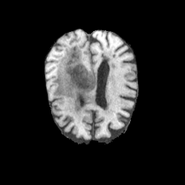
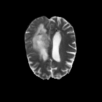
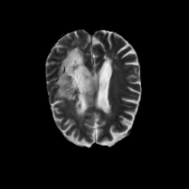
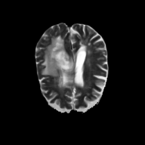
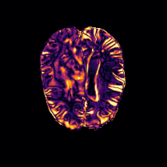
MAE 0.160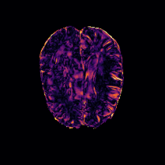
MAE 0.087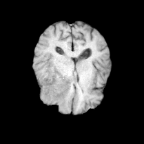
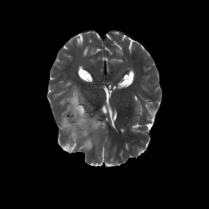
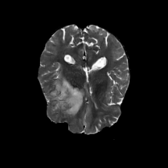
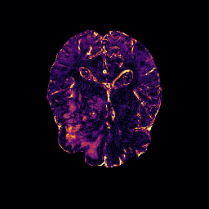
MAE 0.094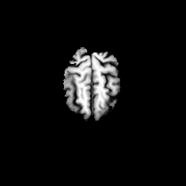
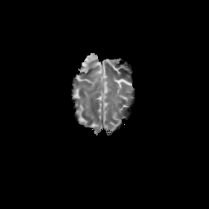
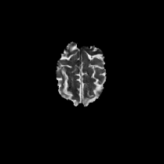
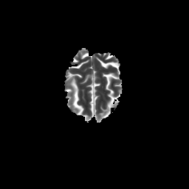
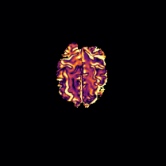
MAE 0.265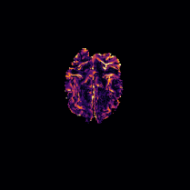
MAE 0.127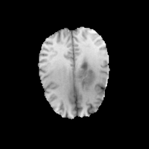
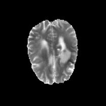
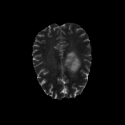
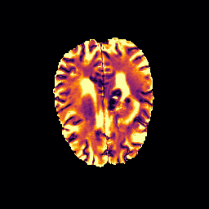
MAE 0.333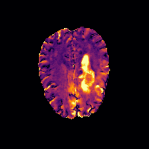
MAE 0.208BraTS2021_00271_s084, B: _01648_s074, C: _01509_s117, D: _01163_s094). Columns: input T1, the synthetic T2 from CUT and CycleGAN, the real T2, then each model's error inside the brain on the colour bar above, with that slice's MAE. Look at the error maps: CUT's errors trace the cortical folds, while CycleGAN's are mostly faint. In row D, CycleGAN makes the tumour much brighter than in the real T2, a reminder that it fails too.Is CUT just misaligned? shift_check.py slides each output a couple of pixels in every direction and re-scores it. CycleGAN scores best exactly where it is, at (0, 0). CUT has no peak, and its unshifted position scores lowest, so its fine structure is partly reversed, not displaced.
The polarity test. polarity_check.py keeps each image's fine detail (the image minus a 2-pixel Gaussian blur of itself) and measures, inside the brain, how it correlates (−1 to +1) with the input T1 and with the real T2.
| Fine detail of … | vs input T1 | vs real T2 |
|---|---|---|
| real T2 (reference) | −0.42 | — |
| CUT | +0.43 | −0.13 |
| CycleGAN | −0.47 | +0.42 |
Table 3. Fine-detail correlations on the 200 test slices. In real scans, fine T1 and T2 detail run in opposite directions (−0.42): thin fluid lines are dark in T1 and bright in T2. CycleGAN reproduces that flip; CUT's fine detail still follows the T1.
 input T1
input T1 CUT
CUT CycleGAN
CycleGAN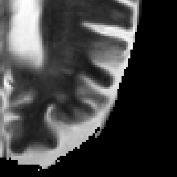
real T2BraTS2021_00271_s084. In the real T2, the white-matter "fingers" are dark with lighter tissue around them, the reverse of the T1. CycleGAN reproduces that pattern; CUT's version is flatter, with bright streaks where the T1 had them. The difference is easier to measure (Table 3) than to see.Two more observations shaped everything after. Brain-only scoring matters: whole-image SSIM is 0.814 for CUT and 0.888 for CycleGAN, a small-looking gap, versus 0.146 and 0.512 inside the brain. Patients differ in brightness: after normalisation, the real T2s' median brain brightness ranges from 0.18 to 0.66, while every model outputs a fairly constant level. That mismatch is part of every model's error, so the comparison stays fair.
4.2 Experiment 2: SynDiff out of the box: realistic-looking, and the worst score
By eye, the pictures looked the most realistic of all our models: sharp folds, convincing T2 contrast, realistic texture. That is only an impression: we did not measure realism (no FID score, no blind reading by radiologists). The score was the worst we had seen: SynDiff original scored brain SSIM 0.105, PSNR 12.04 dB, MAE 0.190, below even CUT.

BraTS2021_00271_s084 (a tumour on the left of the image), cropped to rows and columns 48–208; the "crop location" panel shows where. Top: input T1, each model's output, real T2. Bottom: absolute error inside the brain on one colour scale, with each model's SSIM for this slice. Look at SynDiff original: its output looks like a good T2, yet its error map lights up in bands along the ventricles and the brain edge, and its slice SSIM is 0.07. Those bands are the signature of an image in the wrong place. (The silhouette-loss column is the fixed model from Section 4.5: slice SSIM 0.66, the same as CycleGAN.)4.3 Experiment 3: Finding the shift

That was the culprit: the anatomy was largely right but drawn in the wrong place. Over the 50 scored slices, the single shift that best lines the outputs up with the real T2 is (dy, dx) = (+2, −8), 2 pixels down and 8 left; so, as a whole, the outputs sat about 8 pixels too far right and 2 too high, and correcting that raises SSIM on those slices from 0.088 to 0.519. The shift was consistent from slice to slice (box below). Small as it is, it puts folds and ventricles on the wrong tissue.
A legitimate quick fix. We can't use the real T2 at test time, but we can use the input: align_to_input.py shifts each output (within ±16 pixels) so its brain silhouette best overlaps the input T1's, measured by Dice. Re-aligned, SynDiff original scores 0.507, close to CycleGAN's 0.512. On CycleGAN and CUT it found nothing to correct (scores unchanged at 0.512 and 0.146): the shift is SynDiff's alone.
The shift is not a constant. Scored at every saved checkpoint on the validation patients, it drifted during training and varied between runs (Figure 11; numbers in the box).
Details for ML readers: how consistent and how stable the shift was
- Slice to slice: on the validation patients (full-data run), the typical (median) slice needed the same (+2, −8) correction as the overall best shift, and not one slice was within 1 pixel of correct.
- Over training: in the full-data run the correction was (+1, −7) at epoch 5 and settled at (+2, −8) from epoch 15. In the 500-slice run the horizontal correction grew from −1 to −5 pixels. The 2,000-slice run stayed within 1 pixel of centre throughout.
- These validation corrections are estimated from the input alone (
align_to_input.py), never from the real T2.

4.4 Experiment 4: Why does the shift happen?
The hypothesis. Which of SynDiff's losses cares where the anatomy is?
- The adversarial losses judge realism, not position: the translation networks' PatchGANs score local patches, and the diffusion detectives add up what they see over every position. A brain moved 8 pixels still looks like a real brain.
- The cycle loss only asks the two translation networks to undo each other: if T1 → T2 moves everything 8 pixels right and T2 → T1 moves it 8 left, the round trip is perfect.
The image we score, though, comes from the diffusive generator, trained (Figure 5) to turn \(F(y)\), a fake T1 made from a real T2 \(y\), back into \(y\). If \(F\) shifts by \(-s\), every training source is off by \(-s\), so the diffusive generator learns to apply \(+s\), and applies it at test time to a real, unshifted T1. Nothing prefers one value of \(s\), which would also explain why it differs between runs.
The prediction. If so, all four generators are shifted: both T1 → T2 generators by \(+s\), both T2 → T1 generators by \(-s\). If only the diffusive ones were, the shift would come from diffusion training instead.
The test. syndiff_shift_cause.sbatch measures the shift of all four generators of the epoch-30 checkpoint on 50 test slices, each against the real image of the contrast it produces.
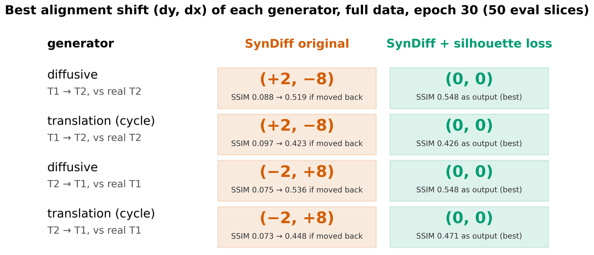
Why didn't CycleGAN and CUT shift? A hypothesis we have not tested. CycleGAN has an identity loss (on by default and in our run): a real T2 fed to the T1 → T2 generator must come out unchanged, so moving everything a few pixels would cost it on every training step. CUT's identity term (on by default in "CUT" mode) does the same with patch matching, and its main patch-matching loss compares each output patch with the input patch at the same location. SynDiff's generator loss has no identity term. This would explain the pattern, but it is only a hypothesis; Section 5 lists the test.
4.5 Experiment 5: Choosing a fix, on validation patients only
We started at 500 slices: runs are cheap there, and that baseline had drifted (Figure 11), so a fix had something to remove. \(\lambda\) sets how much the extra loss counts against SynDiff's own:
- Silhouette (Section 3.5) at \(\lambda = 0.5\) and \(\lambda = 2\).
- MIND (Section 2.8), which compares the layout around every pixel rather than just the outline, at \(\lambda = 0.25\) and \(\lambda = 1\).
Details for ML readers: why these weights
Silhouette: an L1 term like SynDiff's own, so it starts at SynDiff's L1 weight (--lambda_l1_loss 0.5), with 2 as the stronger option. MIND: Yang et al. [13], who add a MIND loss to an unpaired CycleGAN, weight it at half the cycle weight (\(\lambda_{\text{cycle}} = 10\), \(\lambda_{\text{structure}} = 5\)). SynDiff's cycle weight is 0.5, so the same ratio gives 0.25; we also tried 1. MIND uses a 9 × 9 search region, 7 × 7 Gaussian patches with \(\sigma = 2\), and 4-neighbourhood variance. All runs: 500 slices per contrast, 30 epochs, seed 1024.

The silhouette loss removed the shift at every epoch from 5 on, at both weights, with \(\lambda = 0.5\) ahead of \(\lambda = 2\) from epoch 15 on (0.440 vs 0.42 at epoch 30). MIND also removed the shift but broke the translation: validation SSIM stayed negative (−0.06 to −0.14), about the level of handing in the T1 unchanged. We did not investigate why; the rule excludes it.
Scaling up. On 2,000 slices the original run happened to be unshifted, yet the silhouette loss still raised the best validation SSIM from 0.542 to 0.580 (both at epoch 10). On all the data, the fixed run is unshifted at every saved epoch and scores higher than the original even after re-alignment.
Details for ML readers: epoch-by-epoch validation scores (Table 4)
At every saved epoch of the full-data runs, the fixed model's raw validation SSIM (0.568–0.585) beats the original's score after re-alignment (0.525–0.551). The rule's quality floor for this data size is the original's best re-aligned score, 0.551 (epoch 15).
| Epoch | Original raw | Original correction (dy, dx) | Original re-aligned | + silhouette raw |
|---|---|---|---|---|
| 5 | 0.114 | (+1, −7) | 0.525 | 0.585 |
| 10 | 0.109 | (+2, −7) | 0.550 | 0.581 |
| 15 | 0.104 | (+2, −8) | 0.551 | 0.585 |
| 20 | 0.107 | (+2, −8) | 0.546 | 0.577 |
| 25 | 0.110 | (+2, −8) | 0.539 | 0.578 |
| 30 | 0.109 | (+2, −8) | 0.527 | 0.568 |
Table 4. Full-data runs, brain SSIM on the 241 validation slices (results/syndiff_val/val_results.csv). The fixed run needs no correction, (0, 0), at every epoch. If the selection rule is also used to pick an epoch, epochs 5 and 15 tie at 0.585 (within 0.005) and the lower MAE (0.1145 vs 0.1178) picks epoch 5; Section 4.6 reports it as a secondary result.
Repeated on the fixed model, the four-generator test from Experiment 4 puts all four generators at (0, 0) (Figure 13, right column; Figure 10, right panel).
4.6 Experiment 6: The final comparison
Which epoch? As for every model, the headline is the final epoch, 30. The validation patients would have picked epoch 5 (test scores 0.566 / 16.43 dB / 0.121), which we report as secondary. Both come from the same run, both beat CycleGAN on SSIM, and neither choice used test numbers, so the conclusion does not depend on the choice.
| Model | SSIM (brain) ↑ | PSNR (brain, dB) ↑ | MAE (brain) ↓ | SSIM (whole image) |
|---|---|---|---|---|
| Identity (input T1 handed in as T2) | −0.130 | 7.70 | 0.375 | — |
| CUT | 0.146 ± 0.092 | 13.17 ± 1.84 | 0.171 ± 0.051 | 0.814 |
| CycleGAN | 0.512 ± 0.129 | 15.90 ± 2.71 | 0.129 ± 0.063 | 0.888 |
| SynDiff original | 0.105 ± 0.049 | 12.04 ± 1.47 | 0.190 ± 0.043 | 0.773 |
| SynDiff original, re-aligned at test time | 0.507 ± 0.125 | 15.82 ± 2.38 | 0.127 ± 0.053 | 0.887 |
| SynDiff + silhouette loss (ours, epoch 30) | 0.543 ± 0.134 | 16.15 ± 2.65 | 0.124 ± 0.056 | 0.897 |
Table 5. Final results on the 200 test slices (20 patients). Mean ± standard deviation over slices; best per column in bold. The validation-selected epoch 5 of our model scores 0.566 / 16.43 dB / 0.121 (secondary). All values from results/results.csv.
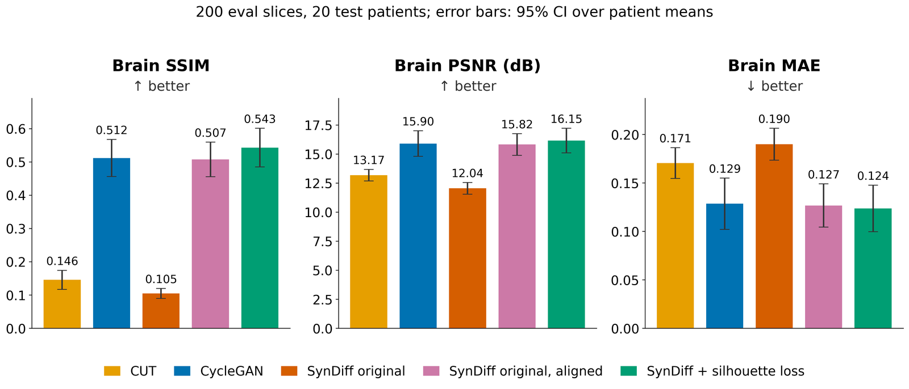
Averages hide a lot. Drag the slider to compare the two SynDiff models' error maps on test slice BraTS2021_00359_s082, which has large fluid-filled ventricles.

 SynDiff original
SynDiff originalslice SSIM 0.04 + silhouette loss
slice SSIM 0.71
BraTS2021_00359_s082, cropped, on one colour scale (dark = small error). Left of the line: SynDiff original. Right: SynDiff + silhouette loss. Look at the ventricles: the original's error shows them twice, as bright parallel bands, because its ventricles sit beside the real ones. There is also a bright rim along one side of the brain. With the silhouette loss both disappear, and this slice's SSIM rises from 0.04 to 0.71 (CycleGAN: 0.72).Is the gain over CycleGAN real? CycleGAN is the strongest other model, so we compared the two patient by patient:

| Metric (patient means) | CycleGAN | + silhouette | Patients improved | p-value |
|---|---|---|---|---|
| SSIM (brain) | 0.512 | 0.543 | 17 / 20 | 0.00017 |
| PSNR (brain, dB) | 15.90 | 16.15 | 12 / 20 | 0.28 |
| MAE (brain) | 0.129 | 0.124 | 12 / 20 | 0.29 |
Table 6. Patient-by-patient comparison over the 20 test patients (Wilcoxon signed-rank test, Section 3.6). For MAE, "improved" means lower.
Details for ML readers: the test statistics
Paired, two-sided Wilcoxon signed-rank test on the 20 patient means, exact null distribution (no zero differences or ties), computed by scripts/wilcoxon_per_patient.py with scipy.stats.wilcoxon. Statistics: SSIM W = 13, p = 0.0001678; PSNR W = 75, p = 0.277; MAE W = 76, p = 0.294.
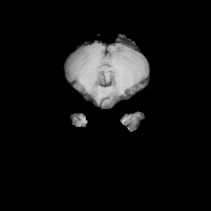
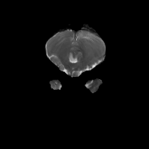
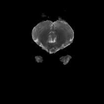
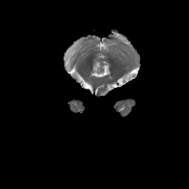
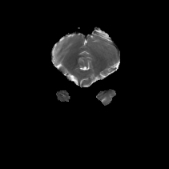
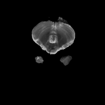
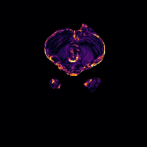
MAE 0.094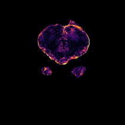
MAE 0.088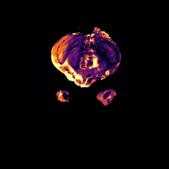
MAE 0.203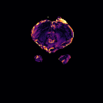
MAE 0.117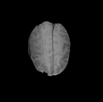
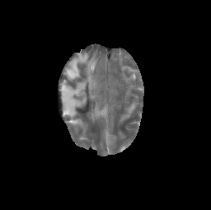
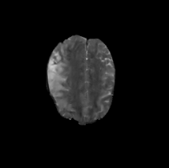
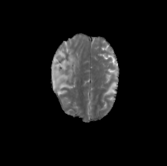
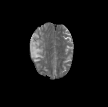
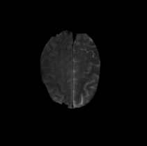
BraTS2021_01598_s027, B: _01143_s121, C: _01648_s074, D: _01163_s094). Top row of each slice: input T1, the synthetic T2 from each model, and the real T2. Bottom row: each model's error inside the brain, directly under its output, with that slice's MAE. Look at row B: the real T2 is unusually dark and every model is too bright. That is the patient-brightness problem from Experiment 1, and no model solves it. Also compare the two SynDiff error columns: the original's maps light up along edges (its shift), the silhouette-loss maps much less.How do our numbers compare with the SynDiff paper? Ours are lower mainly because we score only inside the brain. Scored over the whole image, as the paper appears to, our SSIM is within about 3 points of theirs (box below).
Details for ML readers: comparison with the SynDiff paper (Table 7)
Our SynDiff scores look much lower than the ones in the SynDiff paper, so it is fair to ask whether our setup is broken. Table 7 puts the paper's BraTS T1 → T2 results [10, Table III of the arXiv version] next to ours. The paper reports SSIM as a percentage, so we do the same here.
| Study and setting | Model | PSNR (dB) | SSIM (%) |
|---|---|---|---|
| SynDiff paper [10]: 55 BraTS patients (20 tested), whole image | SynDiff | 27.10 ± 1.26 | 92.35 ± 1.27 |
| cycle-consistent GAN ("cGAN") | 27.00 ± 1.11 | 91.90 ± 1.13 | |
| Ours: BraTS 2021, 200 test slices, whole image | SynDiff + silhouette loss | 23.21 | 89.7 |
| CycleGAN | 22.80 | 88.8 | |
| SynDiff original | 18.13 | 77.3 | |
| Ours: same slices, brain only (our headline) | SynDiff + silhouette loss | 16.15 | 54.3 |
| CycleGAN | 15.90 | 51.2 |
Table 7. SynDiff paper (arXiv v3, Table III, BraTS T1 → T2, mean ± std over its test set) vs our results (results/results.csv; whole-image columns ssim_full and psnr_full). Different data, splits and preprocessing, so the rows are not a like-for-like comparison.
Most of the gap comes from how the scores are computed, not from a broken model:
- Brain-only vs whole image. The paper does not describe a brain mask, so we read its scores as whole-image scores. Scored the same way, our SSIM is within about 3 points of theirs (89.7% vs 92.35% for SynDiff; 88.8% vs 91.90% for the cycle-consistent GAN). Our brain-only headline (54.3%) is much lower only because it leaves out the easy black background.
- Brightness scaling. The paper normalises each scan to a mean of 1 and then divides by one maximum shared by all subjects, so most brain tissue sits at low values. We stretch each scan's own brain to fill 0–1. Our scale is wider, so the same relative mistake is a larger absolute error, which lowers PSNR. This is our likely explanation; we did not re-score our outputs with their scaling.
- Different slices and patients. They take 100 brain-containing slices per subject from 55 patients of an earlier BraTS release (25 for training). We use slices with at least 40% of the largest brain area, every second one, from 160 + 160 training patients of BraTS 2021. Their SynDiff trained for 50 epochs; ours for 30.
The pattern also matches. In both studies, SynDiff (in our case, with the silhouette loss) is slightly ahead of the cycle-consistent GAN. The unfixed SynDiff is the odd one out, and its whole-image score (77.3%) is where the shift shows.
4.7 Experiment 7: Does the amount of data matter?

5. Conclusions
Main idea and results
We compared three unpaired methods for turning T1 brain MRI into T2 under identical conditions, scoring only inside the brain. Two lessons stand out. First, the GAN that ties output most tightly to input (CUT) did much worse than CycleGAN. For T1 → T2, "keep the input's local pattern" is partly the wrong goal, because the fine contrast must flip. Second, a strong diffusion model (SynDiff) can produce images that look realistic by eye (we did not measure realism) yet are systematically misplaced. Its two translation directions learned equal and opposite shifts that cancel on the round trip, and its diffusion generators inherited the shift. A small silhouette loss, chosen on validation patients only, removed the shift from all four generators. It turned SynDiff from the lowest score (brain SSIM 0.105) into the best SSIM in our single-run comparison (0.543), better than CycleGAN on 17 of 20 patients (p = 0.00017), with PSNR and MAE about level.
The broader takeaway: looking right is not being right. Realism-based losses and whole-image metrics both missed an 8-pixel error that brain-only, per-patient scoring exposed immediately.
Limitations
- One training run per model. We did not measure run-to-run variation, and the shift itself varied between runs. The p-value compares patients, not training runs.
- 2D slices. Each slice is translated on its own, with no 3D context, so neighbouring slices may not be perfectly consistent.
- Patients differ in brightness. The real T2's median brain brightness ranges from 0.18 to 0.66 across test patients, and no model predicts this. Pixel-wise scores punish it for every model.
- Uneven tuning. SynDiff + silhouette loss got a 4-setting loss sweep chosen on validation patients and the data-size experiment (500, 2,000 and 7,514 slices). CycleGAN and CUT each ran once, on default settings, at full data only. So "CUT did much worse than CycleGAN" describes CUT at its defaults, and the SSIM margin of SynDiff + silhouette loss over CycleGAN should be read with this uneven effort in mind.
- Modest test set. We score a fixed subset of 20 of the 80 held-out patients (200 slices), fixed before any results so that every run is scored on the same slices. Only the SSIM difference with CycleGAN is statistically significant.
- Hand-set silhouette constants. The threshold (0.03) and sharpness (0.006) were set by hand, not tuned.
- No tumour-region score. All our scores average over the whole brain. We did not score the tumour region separately, so we can't say how faithfully each model reproduces the tumour itself.
- No clinical evaluation. Our scores measure agreement with the real T2, not whether a radiologist would reach the same diagnosis.
Future work
- Several training runs per model, each from a different random starting point, to separate real differences from training luck.
- Score all held-out patients: every test patient not used for validation, not just the fixed 20.
- 3D (or multi-slice) translation, to use context across slices.
- A downstream test: train a tumour-segmentation model and compare its accuracy on real vs synthetic T2.
- A paired upper bound with Pix2Pix [3], using the pairs we hid.
- Unpaired diffusion baselines such as SDEdit [8] and DDIB [9].
- Test the identity-loss hypothesis (Section 4.4): train CycleGAN without its identity loss and check whether a shift appears.
- Tumour-region MAE, using the tumour masks that come with BraTS, to score the part of the image that matters most clinically.
- Open question: why the MIND loss broke the translation.
Reproduce our results
Everything is in the code repository (no data or model weights). In brief:
- Data: request BraTS 2021 Task 1 from the official source (Synapse) and accept its terms; we used the same training set from the Kaggle mirror. Run
preprocess.py; the split and settings are recorded insplit.json. - CycleGAN / CUT: clone the official repos at the commits in
upstream_versions.txt, applypatches/cut_grayscale.patchto CUT, then runcyclegan_v1.sbatch,cut_v1.sbatchandrun_test.sbatch. - SynDiff: clone icon-lab/SynDiff at the pinned commit, convert data with
diffusion/make_mat.py, train withdiffusion/syndiff_train.sbatch(original) ordiffusion/syndiff_sc_train.sbatch n7514 30 silhouette 0.5(ours), and generate withdiffusion/syndiff_infer.sbatch. - Score:
evaluate.py(brain-masked SSIM / PSNR / MAE),diffusion/align_to_input.py(input-only re-alignment) andscripts/wilcoxon_per_patient.py(the per-patient test).
python evaluate.py --run cyclegan_v1 --pred_dir <results>/cyclegan_v1/test_latest/images
python scripts/wilcoxon_per_patient.pyStep-by-step commands are in the repository's README.md, gan/README.md and diffusion/README.md.
Acknowledgements
We thank Dr. Siyu Huang for the course and for feedback during the project, Clemson University's Palmetto 2 cluster for GPU time, the BraTS organisers and data contributors, and the authors of CycleGAN, CUT and SynDiff for releasing their code. This post's format was inspired by Christopher Olah's "Understanding LSTM Networks" and Andrej Karpathy's "The Unreasonable Effectiveness of Recurrent Neural Networks".
References
- I. Goodfellow, J. Pouget-Abadie, M. Mirza, B. Xu, D. Warde-Farley, S. Ozair, A. Courville, Y. Bengio. Generative Adversarial Networks. NeurIPS 2014. arXiv:1406.2661
- X. Mao, Q. Li, H. Xie, R. Y. K. Lau, Z. Wang, S. P. Smolley. Least Squares Generative Adversarial Networks. ICCV 2017. doi:10.1109/ICCV.2017.304
- P. Isola, J.-Y. Zhu, T. Zhou, A. A. Efros. Image-to-Image Translation with Conditional Adversarial Networks (Pix2Pix). CVPR 2017. arXiv:1611.07004
- J.-Y. Zhu, T. Park, P. Isola, A. A. Efros. Unpaired Image-to-Image Translation using Cycle-Consistent Adversarial Networks (CycleGAN). ICCV 2017. arXiv:1703.10593
- T. Park, A. A. Efros, R. Zhang, J.-Y. Zhu. Contrastive Learning for Unpaired Image-to-Image Translation (CUT). ECCV 2020. arXiv:2007.15651
- J. Ho, A. Jain, P. Abbeel. Denoising Diffusion Probabilistic Models. NeurIPS 2020. arXiv:2006.11239
- Z. Xiao, K. Kreis, A. Vahdat. Tackling the Generative Learning Trilemma with Denoising Diffusion GANs. ICLR 2022. arXiv:2112.07804
- C. Meng, Y. He, Y. Song, J. Song, J. Wu, J.-Y. Zhu, S. Ermon. SDEdit: Guided Image Synthesis and Editing with Stochastic Differential Equations. ICLR 2022. arXiv:2108.01073
- X. Su, J. Song, C. Meng, S. Ermon. Dual Diffusion Implicit Bridges for Image-to-Image Translation (DDIB). ICLR 2023. arXiv:2203.08382
- M. Özbey, O. Dalmaz, S. U. H. Dar, H. A. Bedel, Ş. Özturk, A. Güngör, T. Çukur. Unsupervised Medical Image Translation with Adversarial Diffusion Models (SynDiff). IEEE Transactions on Medical Imaging 42(12), 2023. doi:10.1109/TMI.2023.3290149 · arXiv:2207.08208 · code
- J. P. Cohen, M. Luck, S. Honari. Distribution Matching Losses Can Hallucinate Features in Medical Image Translation. MICCAI 2018. arXiv:1805.08841
- M. P. Heinrich et al. MIND: Modality Independent Neighbourhood Descriptor for Multi-Modal Deformable Registration. Medical Image Analysis 16(7), 2012. doi:10.1016/j.media.2012.05.008
- H. Yang, J. Sun, A. Carass, C. Zhao, J. Lee, Z. Xu, J. Prince. Unpaired Brain MR-to-CT Synthesis using a Structure-Constrained CycleGAN. DLMIA (MICCAI workshop) 2018. arXiv:1809.04536
- U. Baid et al. The RSNA-ASNR-MICCAI BraTS 2021 Benchmark on Brain Tumor Segmentation and Radiogenomic Classification. 2021. arXiv:2107.02314
- B. H. Menze et al. The Multimodal Brain Tumor Image Segmentation Benchmark (BRATS). IEEE Transactions on Medical Imaging 34(10), 2015. doi:10.1109/TMI.2014.2377694
- S. Bakas et al. Advancing The Cancer Genome Atlas glioma MRI collections with expert segmentation labels and radiomic features. Scientific Data 4, 2017. doi:10.1038/sdata.2017.117
- Z. Wang, A. C. Bovik, H. R. Sheikh, E. P. Simoncelli. Image Quality Assessment: From Error Visibility to Structural Similarity. IEEE Transactions on Image Processing 13(4), 2004. doi:10.1109/TIP.2003.819861
- C. Chu, A. Zhmoginov, M. Sandler. CycleGAN, a Master of Steganography. NIPS 2017 Workshop on Machine Deception. arXiv:1712.02950
- S. Benaim, L. Wolf. One-Sided Unsupervised Domain Mapping (DistanceGAN). NeurIPS 2017. arXiv:1706.00826
- H. Fu, M. Gong, C. Wang, K. Batmanghelich, K. Zhang, D. Tao. Geometry-Consistent Generative Adversarial Networks for One-Sided Unsupervised Domain Mapping (GcGAN). CVPR 2019. arXiv:1809.05852
- M.-Y. Liu, T. Breuel, J. Kautz. Unsupervised Image-to-Image Translation Networks (UNIT). NeurIPS 2017. arXiv:1703.00848
- X. Huang, M.-Y. Liu, S. Belongie, J. Kautz. Multimodal Unsupervised Image-to-Image Translation (MUNIT). ECCV 2018. arXiv:1804.04732
- Y. A. Mejjati, C. Richardt, J. Tompkin, D. Cosker, K. I. Kim. Unsupervised Attention-guided Image-to-Image Translation. NeurIPS 2018. arXiv:1806.02311
- B. Kim, G. Kwon, K. Kim, J. C. Ye. Unpaired Image-to-Image Translation via Neural Schrödinger Bridge (UNSB). ICLR 2024. arXiv:2305.15086
- Y. Li, H.-C. Shao, X. Liang, L. Chen, R. Li, S. Jiang, J. Wang, Y. Zhang. Zero-Shot Medical Image Translation via Frequency-Guided Diffusion Models (FGDM). IEEE Transactions on Medical Imaging 43(3), 2024. doi:10.1109/TMI.2023.3325703 · arXiv:2304.02742